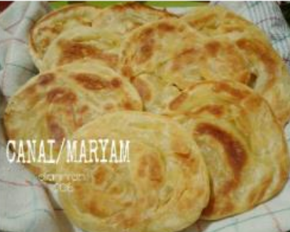
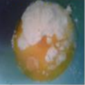
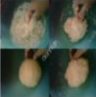

Resep Makan Maryam

Bahan-Bahan:
- 250 gram tepung terigu
- 1 butir telur
- 3 sdm margarin,lelehkan
- 100 ml air hangat
- 2 sdm susu bubuk
- 1/2 sdt garam
- margarin leleh untuk olesan
- minyak untuk merendam
Langkah-Langkah
- Campur semua bahan roti yang ada

- Uleni sampai kalis (aku pake tangan) jangan takut adonan lengket ya,lumuri tangan sesekali dg tepung(tapi jangan menambah tepung) uleni terus sampai adonan kalis

- Kalisnya adonan canai tidak sekalis adonan roti ya,kira2 seperti ini sudah cukup